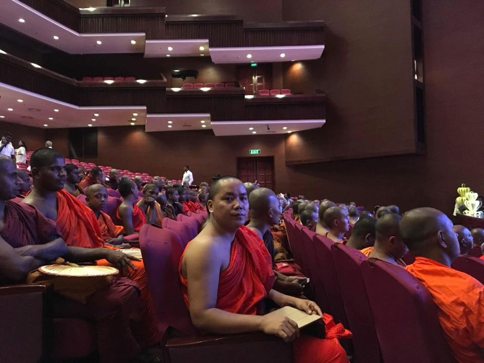
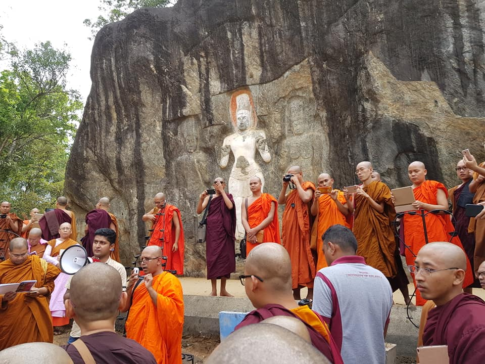

About Me
မင်္ဂလာပါ ခင်ဗျာ၊ စိတ်ဝင်စားစရာကောင်းတဲ့ ကျွန်တော့် အကြောင်း အနည်းငယ်ကို ပြောပါရစေ။ ကျွန်တော်က မြန်မာ ရဟန်းတစ်ပါးဖြစ်ပါတဃ်၊ သာသနာ့ဘောင်ထဲ အသက်(၇)နှစ်သားမှာ ပထမအကြိမ်၊ (၁၃)နှစ်သားအရွယ်မှာ ဒုတိယအကြိမ် ကိုရင်အဖြစ် ဝင်ရောက်ခဲ့ပါတယ်၊ အသက်(၁၃)နှစ်သားအရွယ်ကနေ ယခုချိန်ထိ သာသနာ့ဘောင်ထဲ သာသနာ့တာဝန်ကို ထမ်းဆောင်နေဆဲ၊ ရဟန်းတစ်ပါးအဖြစ်ဖြင့် ဆက်လက်ရပ်တည်နေဆဲ ရှိနေဆဲပါ၊ ဘုရားရှိခိုးခြင်း၊ စာဖတ်ခြင်း၊ ခရီးသွားခြင်း၊ကို အထူးခုံမင်နှစ်သက်ပါတယ်။ ယခု နေထိုင်နေတာကတော့ နယူးတိုင်ပေ ထိုင်ဝမ်မှာဖြစ်ပါတယ်။

My Education
ဗုဒ္ဓစာပေကျမ်းဂန်များနှင့် ပတ်သက်ပြီး ငယ်ကတည်းက သင်ယူလေ့ကျင့် ကျက်မှတ်ခဲ့ရပါတယ်၊ ရှင့်ကျင့်ဝတ်၊ ရဟန်းကျင့်ဝတ်၊ မြန်မာနိုင်ငံက ကြီးမှူး ကျင့်ပတဲ့ အစိုးရ မူ၊ငယ်၊လတ်၊ကြီး၊ ဓမ္မာစရိယ၊ အတန်းများကို သင်ကြား ဖြေဆို အောင်မြင်ခဲ့ပါတယ်။ သီတဂူဗုဒ္ဓတက္ကသိုလ်မှာ ဗုဒ္ဓဘာသာ စာပေနဲ့ ဒီပလိုမာ၊ ဘီအေ၊ အတန်းများ အောင်မြင်ခဲ့ပါတယ်။ သီရိလင်္ကာ နိုင်ငံ kelaniya University မှာ MA Buddhist studies ကို တက်ရောက် သင်ကြား အောင်မြင်ခဲ့ပါတယ်။ ယခု အချိန်မှာတော့ Learner Developer တစ်ဃောက်အနေဖြင့် Panna Collegue University မှာ Programming ပညာရပ်များကို လေ့လာသင်ယူနေပါတဃ်။

My Skills
ဗုဒ္ဓစာပေကျမ်းဂန်များနှင့် ပတ်သက်၍ အကျွမ်းတဝင်ရှိပါတယ်၊ မြန်မာစာပေဖြစ်တဲ့ ကဗျာ၊ ဆောင်းပါး၊ အက်ဆေး၊များကို မဂ္ဂဇင်းများတွင်ရေးသား ပေးပို့ခဲ့ဖူးသူဖြစ်ပါတယ်၊ အစားအသောက်နှင့် ပတ်သက်၍ ချက်ပြုတ် ကြော်လှော်ခြင်း နည်းပညာများကို အနုပညာတစ်ရပ်လို တန်ဖိုးထားသူ၊ အချက်ပြုတ်ကောင်းသူ၊ master chef တစ်ယောက်နီးပါး ချက်ပြုတ်တတ်သူဖြစ်ပါတယ်၊ သစ်ပင် ပန်းမာလ် စိုက်ခြင်း၊ ရေလောင်းခြင်း၊ သန့်ရှင်းသပ်ရပ်စွာ နေထိုင်တတ်သူဖြစ်ပါတယ်။